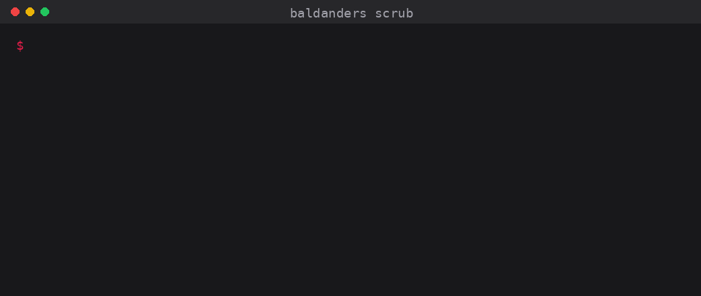

Put real customer data through Claude Code and Codex, and it never reaches them.
Baldanders runs on your machine, between you and the CLI you already use. Names, emails, IDs, bank details and secrets are swapped for tokens before your message leaves the laptop, and swapped back when the reply arrives. The model only ever sees the tokens.

How it works
You type a message. It goes to Baldanders first, before any network call.
-
Personal data is found and replaced, locally.
Three layers: your own denylist, deterministic rules (emails, phone numbers, cards, IBANs, 55+ national ID formats and secrets, checksum-validated where the format allows), and an optional offline model for names and addresses. Each match becomes a token like
[PERSON_1]. Only the scrubbed text is sent. Run with
-vto see every byte that leaves.Tokens in the reply are turned back into the real values as it streams in. You read a normal response.
Saved sessions are encrypted; the key lives in your OS keychain, never in a file.
What gets scrubbed
- Contact
- Emails, including non-Latin addresses, and phone numbers from any country.
- Financial
- Cards (Luhn-checked), IBANs for 89 countries (mod-97), crypto wallet addresses.
- Identity
- 55+ national ID and tax formats such as SSN, CPF, DNI and Aadhaar, checksum-validated where the format has one.
- People, places
- Names and street addresses in 20+ languages, via an optional offline model.
- Secrets
- AWS, GitHub and Stripe keys, JWTs, private keys, and passwords in config files or database URLs.
- Network
- IPv4, IPv6 and MAC addresses.
Providers
Privacy
What leaves your machine: only the scrubbed text, plus a short instruction asking the model to keep the tokens intact. -v shows every byte.
What stays local: the token map, the detection model, your config, and your session history.
No network during detection. The model runs fully offline; HF_HUB_OFFLINE and TRANSFORMERS_OFFLINE are set so it cannot phone home.
Encrypted at rest. Saved sessions are encrypted with Fernet, the key held in your OS keychain (macOS Keychain, Windows Credential Manager, Linux Secret Service). With no secure keychain, nothing is written to disk.